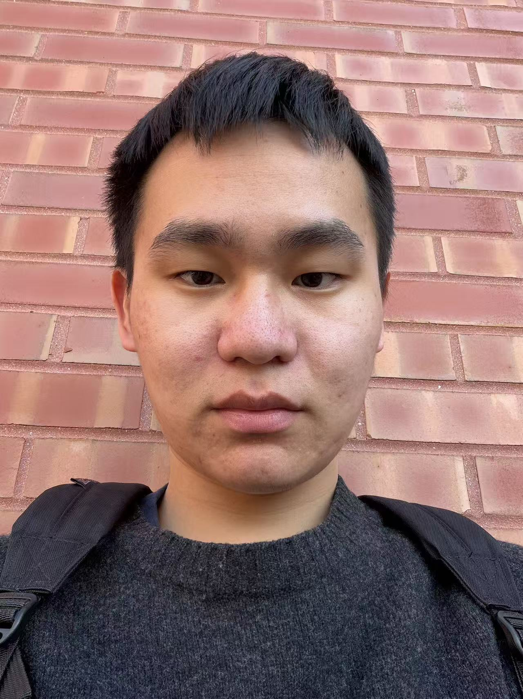

Hi, I'm Yu Wang.

I am a junior undergraduate student at the University of Illinois Urbana-Champaign, majoring in Statistics with minors in Mathematics and Computer Science.
My academic interests center on applied machine learning and statistical methodology, with a focus on supervised learning, regression analysis, and forecasting on structured data. I am deeply drawn to the intersection of statistical rigor and algorithmic prediction. I enjoy developing complete analytical pipelines, emphasizing robust model selection, regularization, and careful diagnostics, to tackle complex predictive problems, particularly in time-series and advanced analytics.
Education:
- 2023, Department of Mathematics, Kean University
- 2025, Department of Statistics, University of Illinois Urbana-Champaign (minors in Mathematics and Computer Science)
Contact:
- Email: yuw17@illinois.edu
- LinkedIn: linkedin.com/in/yuwang3120